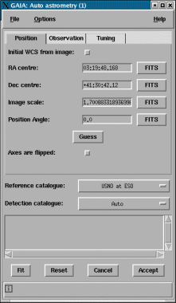

The basic requirements and usage of this toolbox are the same as those of the simple version. To use these advanced features it is strongly suggested that you also read the AUTOASTROM document SUN/242.
The main features that this offers over those of the simple toolbox are:
Here's a very simplified run-down of what AUTOASTROM does, it should help you understand how to use this toolbox effectively:
After this last stage the solution is attached to your image by GAIA (at this time in memory only) and the catalogue of matched positions is plotted over the image.
AUTOASTROM runs the EXTRACTOR (SUN/243) program to detect all the objects in your image, if you need to fine tune the detection parameters (say to reduce the number of objects detected), then you can use the GAIA "Object detection" toolbox to pre-calculate the object positions. To do this open a "Object detection" toolbox and selected the "AUTOASTROM mode" from the "Options" menu. Once you've created your catalogue of detections is should be selectable in the "Detection catalogue" menu (note that catalogues only become available in this menu when they are opened in a catalogue window).
You can download or read in an existing catalogue and get AUTOASTROM to use that as the reference positions catalogue. Obviously this has two advantages, you get to pre-select the reference positions being used (useful if you know stars with significant proper motions are in the field) and you can work off-line.
To download a catalogue when the image doesn't have a WCS already you will need to use a clone window (all catalogues regardless of the image they are attached to are made available, so it doesn't matter where you open this catalogue). You should leave the clone window empty (i.e. not displaying an image) and the download will not be constrained to the displayed image.
The options in the "Observation" and "Tuning" tabs allow you to provide the full set of AUTOASTROM options, read the AUTOASTROM and ASTROM documentation to understand how these effect your fit.
You can also improve your fit by re-using the match catalogue as the reference catalogue for the next run. The match catalogue includes a column that contains the shift in position, so you could sort on this and remove any obvious problem objects (like high motions stars, galaxies blends etc.), before re-fitting.